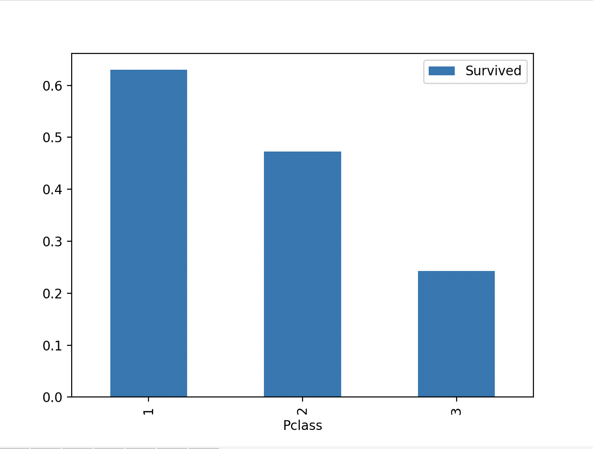

Exploring Titanic Dataset with Pandas
1. Import the Required Libraries
You should import Pandas (import pandas as pd) and Matplotlib (import matplotlib.pyplot as plt) for data manipulation and visualization.
· Python command
import pandas as pd
import matplotlib.pyplot as plt
· Output command
Python 3.12.2 (v3.12.2:6abddd9f6a, Feb 6 2024, 17:02:06) [Clang 13.0.0 (clang-1300.0.29.30)] on Darwin
Type "help", "copyright", "credits" or "license" for more information.
>>>
To import package, we use import command. We need to use import pandas and import matplotlib.pyplot
For the output command we use the python 3.12.2
2. Load the Dataset
Load the Titanic dataset from a CSV file named 'titanic.csv' into a Pandas DataFrame.
· Python command
df = pd.read_csv("titanic.csv")
print(df)
· Output command
>>> df = pd.read_csv("titanic.csv")
>>> print(df)
PassengerId Survived Pclass Name Sex Age SibSp Parch Ticket Fare Cabin Embarked
0 1 0 3 Braund, Mr. Owen Harris male 22.0 1 0 A/5 21171 7.2500 NaN S
1 2 1 1 Cumings, Mrs. John Bradley (Florence Briggs Th... female 38.0 1 0 PC 17599 71.2833 C85 C
2 3 1 3 Heikkinen, Miss. Laina female 26.0 0 0 STON/O2. 3101282 7.9250 NaN S
3 4 1 1 Futrelle, Mrs. Jacques Heath (Lily May Peel) female 35.0 1 0 113803 53.1000 C123 S
4 5 0 3 Allen, Mr. William Henry male 35.0 0 0 373450 8.0500 NaN S
.. ... ... ... ... ... ... ... ... ... ... ... ...
886 887 0 2 Montvila, Rev. Juozas male 27.0 0 0 211536 13.0000 NaN S
887 888 1 1 Graham, Miss. Margaret Edith female 19.0 0 0 112053 30.0000 B42 S
888 889 0 3 Johnston, Miss. Catherine Helen "Carrie" female NaN 1 2 W./C. 6607 23.4500 NaN S
889 890 1 1 Behr, Mr. Karl Howell male 26.0 0 0 111369 30.0000 C148 C
890 891 0 3 Dooley, Mr. Patrick male 32.0 0 0 370376 7.7500 NaN Q
[891 rows x 12 columns]
>>>
To load the dataset, we use load command. We need to load the dataset from the csv file name “titanic.csv” into the Pandas DataFrame.
To get the output command we need to write print, so that they can show the dataset from the file.
3. Data Exploration
Display the first few rows of the dataset to understand its structure.
· Python command
df.head()
· Output command
>>> df.head()
PassengerId Survived Pclass Name Sex Age SibSp Parch Ticket Fare Cabin Embarked
0 1 0 3 Braund, Mr. Owen Harris male 22.0 1 0 A/5 21171 7.2500 NaN S
1 2 1 1 Cumings, Mrs. John Bradley (Florence Briggs Th... female 38.0 1 0 PC 17599 71.2833 C85 C
2 3 1 3 Heikkinen, Miss. Laina female 26.0 0 0 STON/O2. 3101282 7.9250 NaN S
3 4 1 1 Futrelle, Mrs. Jacques Heath (Lily May Peel) female 35.0 1 0 113803 53.1000 C123 S
4 5 0 3 Allen, Mr. William Henry male 35.0 0 0 373450 8.0500 NaN S
>>>
To understand the structure of the first row of the dataset, we use df.head()
To get the output we need to run the system so we can get the df.head() data.
Print information about the columns and their data types.
· Python command
df.info(
· Output command
>>> df.info()
<class 'pandas.core.frame.DataFrame'>
RangeIndex: 891 entries, 0 to 890
Data columns (total 12 columns):
# Column Non-Null Count Dtype
--- ------ -------------- -----
0 PassengerId 891 non-null int64
1 Survived 891 non-null int64
2 Pclass 891 non-null int64
3 Name 891 non-null object
4 Sex 891 non-null object
5 Age 714 non-null float64
6 SibSp 891 non-null int64
7 Parch 891 non-null int64
8 Ticket 891 non-null object
9 Fare 891 non-null float64
10 Cabin 204 non-null object
11 Embarked 889 non-null object
dtypes: float64(2), int64(5), object(5)
memory usage: 83.7+ KB
To Print information about the columns and their data types, we need to use df.info()
To get the output we need to run the system then got the data
Show summary statistics for numerical columns (e.g., mean, min, max, etc.).
· Python command
df.describe()
· Output command
>>> df.describe()
PassengerId Survived Pclass Age SibSp Parch Fare
count 891.000000 891.000000 891.000000 714.000000 891.000000 891.000000 891.000000
mean 446.000000 0.383838 2.308642 29.699118 0.523008 0.381594 32.204208
std 257.353842 0.486592 0.836071 14.526497 1.102743 0.806057 49.693429
min 1.000000 0.000000 1.000000 0.420000 0.000000 0.000000 0.000000
25% 223.500000 0.000000 2.000000 20.125000 0.000000 0.000000 7.910400
50% 446.000000 0.000000 3.000000 28.000000 0.000000 0.000000 14.454200
75% 668.500000 1.000000 3.000000 38.000000 1.000000 0.000000 31.000000
max 891.000000 1.000000 3.000000 80.000000 8.000000 6.000000 512.329200
to get the summary statistic for the numerical column (max,min, mean,median,etc), we can use df.describe()
then for the output we need to run the system so we can get the data
4. Data Cleaning
Identify and handle missing values in the dataset (e.g., fill missing age values with median).
· Python command
df.fillna(df.median(numeric_only=True).round(1), inplace=True)
print(df)
· Output command
>>> print(df)
PassengerId Survived Pclass Name Sex Age SibSp Parch Ticket Fare Cabin Embarked
0 1 0 3 Braund, Mr. Owen Harris male 22.0 1 0 A/5 21171 7.2500 NaN S
1 2 1 1 Cumings, Mrs. John Bradley (Florence Briggs Th... female 38.0 1 0 PC 17599 71.2833 C85 C
2 3 1 3 Heikkinen, Miss. Laina female 26.0 0 0 STON/O2. 3101282 7.9250 NaN S
3 4 1 1 Futrelle, Mrs. Jacques Heath (Lily May Peel) female 35.0 1 0 113803 53.1000 C123 S
4 5 0 3 Allen, Mr. William Henry male 35.0 0 0 373450 8.0500 NaN S
.. ... ... ... ... ... ... ... ... ... ... ... ...
886 887 0 2 Montvila, Rev. Juozas male 27.0 0 0 211536 13.0000 NaN S
887 888 1 1 Graham, Miss. Margaret Edith female 19.0 0 0 112053 30.0000 B42 S
888 889 0 3 Johnston, Miss. Catherine Helen "Carrie" female 28.0 1 2 W./C. 6607 23.4500 NaN S
889 890 1 1 Behr, Mr. Karl Howell male 26.0 0 0 111369 30.0000 C148 C
890 891 0 3 Dooley, Mr. Patrick male 32.0 0 0 370376 7.7500 NaN Q
[891 rows x 12 columns]
To identify and handle the missing value in the dataset and fill the missing age with median, we need to use df.fillna()
Perform any necessary data transformations or cleaning steps.
· Python command
df.dropna()
· Output command
df.dropna()
PassengerId Survived Pclass Name Sex Age SibSp Parch Ticket Fare Cabin Embarked
1 2 1 1 Cumings, Mrs. John Bradley (Florence Briggs Th... female 38.0 1 0 PC 17599 71.2833 C85 C
3 4 1 1 Futrelle, Mrs. Jacques Heath (Lily May Peel) female 35.0 1 0 113803 53.1000 C123 S
6 7 0 1 McCarthy, Mr. Timothy J male 54.0 0 0 17463 51.8625 E46 S
10 11 1 3 Sandstrom, Miss. Marguerite Rut female 4.0 1 1 PP 9549 16.7000 G6 S
11 12 1 1 Bonnell, Miss. Elizabeth female 58.0 0 0 113783 26.5500 C103 S
.. ... ... ... ... ... ... ... ... ... ... ... ...
871 872 1 1 Beckwith, Mrs. Richard Leonard (Sallie Monypeny) female 47.0 1 1 11751 52.5542 D35 S
872 873 0 1 Carlsson, Mr. Frans Olof male 33.0 0 0 695 5.0000 B51 B53 B55 S
879 880 1 1 Potter, Mrs. Thomas Jr (Lily Alexenia Wilson) female 56.0 0 1 11767 83.1583 C50 C
887 888 1 1 Graham, Miss. Margaret Edith female 19.0 0 0 112053 30.0000 B42 S
889 890 1 1 Behr, Mr. Karl Howell male 26.0 0 0 111369 30.0000 C148 C
[202 rows x 12 columns]
>>>
To clean the data set and fill the missing number we use df.dropna()
5. Data Analysis
Calculate and display the count of passengers by gender.
· Python command
gender_counts = df['Sex'].value_counts()
print(gender_counts)
· Output command
>>> print(gender_counts)
Sex
male 577
female 314
Name: count, dtype: int64
To calculate and display the count of passengers by gender, we need to use value_count()
Compute the average age of passengers.
· Python command
df['Age'].mean()
· Output command
>>> df['Age'].mean()
29.36158249158249
To compute the the average age of the passengers we need to use mean()
Determine the survival rate by passenger class.
· Python command
df[['Pclass', 'Survived']].groupby('Pclass', as_index=False).mean()
· Output command
>>> df[['Pclass', 'Survived']].groupby('Pclass', as_index=False).mean()
Pclass Survived
0 1 0.629630
1 2 0.472826
2 3 0.242363
>>>
To Determine the survival rate by passenger class we need to use the groupby()
6. Data Visualization
Create a bar chart to visualize the survival rate by passenger class.
· Python command
df[['Pclass', 'Survived']].groupby('Pclass', as_index=False).mean()
df = pd.DataFrame({
'Pclass': ['1', '2', '3'],
'Survived' : [0.629630, 0.472826, 0.242363]
})
df.plot(x='Pclass', y='Survived', kind='bar')
plt.show()
· Output command

To Create a bar chart to visualize the survival rate by passenger class, we need to use the df.plot bar
Add appropriate labels and a title to the chart.
7. Conclusion
Summarize your findings or insights gained from analyzing the Titanic dataset.
From exploring all the titanic dataset with pandas, I can gain a lot of insight and things to do with pandas and with the pandas we can also indentified and filled the missing data.
Reflect on the importance of data cleaning and exploration in data analysis.